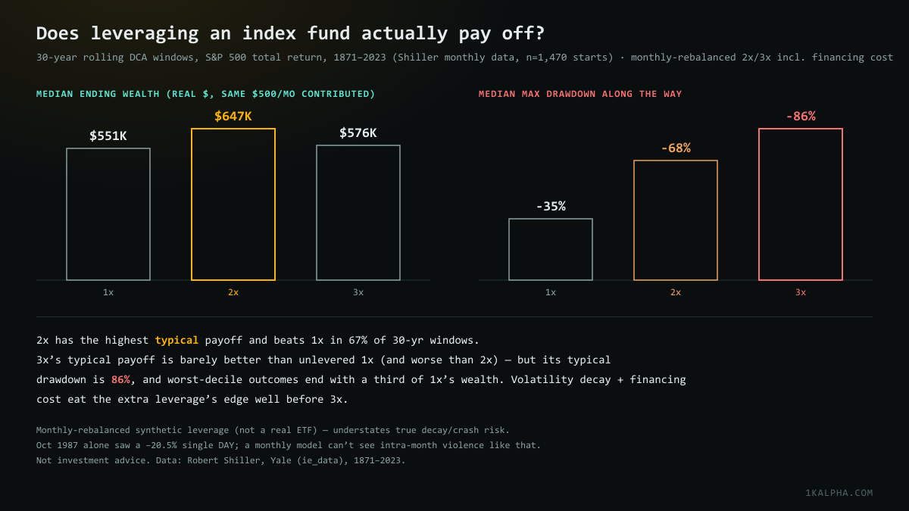
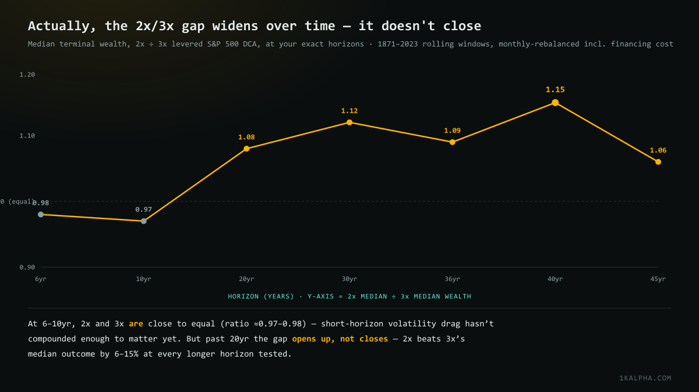

2x vs 3x Leveraged S&P 500 DCA: A 152-Year Backtest
Chris Camillo recently argued that young investors should dollar-cost-average into a 2x — even 3x — leveraged index fund and just hold. It's not a fringe take: it's the practical version of the "lifecycle investing" argument (lever up early when you have decades of future income to fall back on, de-lever as you age) that's been in academic finance for over a decade. But it's also exactly the kind of claim that's easy to state and hard to actually check. So I ran the numbers.
Short version: 2x looks like a real, durable edge. 3x does not — its typical payoff is barely better than plain 1x, its drawdowns are brutal, and its worst-case outcomes are dramatically worse than either.
Methodology
I used Robert Shiller's monthly S&P 500 dataset (price, dividends, CPI, long-term interest rates), which runs from January 1871 through the most recent fully-populated month, June 2023 — 152 years, 1,830 months. For each possible starting month, I simulated a fixed $500/month contribution, held constant in real (inflation-adjusted) terms, dollar-cost-averaged into three tracks:
- 1x — unlevered total-return index (price + dividends reinvested)
- 2x / 3x — synthetic, monthly-rebalanced leverage: each month, the levered return is
L × (index return) − (L−1) × (financing cost), where financing cost is the Shiller long-rate series plus an assumed 1.5%/year spread, approximating a real margin-loan rate
This is the same mechanical process that makes daily-reset leveraged ETFs (like UPRO or SSO) diverge from a naive "2x the index" or "3x the index" return over time — it's usually called volatility drag or beta slippage. Compounding a leveraged return path is not the same as multiplying the unlevered ending value by the leverage ratio, and the gap grows with how choppy the path is, independent of financing cost.
The headline numbers
Across every rolling window from 6 to 45 years (starting every single month from 1871 through however far back a full window fits):
| Horizon | 1x median | 2x median | 3x median | 2x wins* | 3x wins* | 1x maxDD | 2x maxDD | 3x maxDD |
|---|---|---|---|---|---|---|---|---|
| 6yr | $45,315 | $48,458 | $49,544 | 61.5% | 58.4% | 9% | 27% | 45% |
| 10yr | $87,820 | $93,774 | $96,865 | 60.4% | 56.0% | 17% | 41% | 61% |
| 20yr | $256,382 | $285,739 | $265,605 | 62.4% | 55.5% | 28% | 58% | 77% |
| 30yr | $550,930 | $647,341 | $576,032 | 67.4% | 54.6% | 35% | 68% | 86% |
| 36yr | $873,911 | $1,070,050 | $985,849 | 69.2% | 55.7% | 38% | 71% | 89% |
| 40yr | $1,101,187 | $1,493,944 | $1,303,939 | 73.1% | 57.3% | 41% | 73% | 89% |
| 45yr | $1,573,113 | $2,444,235 | $2,312,318 | 72.7% | 59.5% | 48% | 82% | 96% |
*% of rolling windows where that leverage level beat unlevered 1x in real terminal wealth. maxDD = median maximum drawdown experienced during the window, not just at the end. All dollar figures are real (inflation-adjusted to start-of-window purchasing power).
Two things jump out immediately. First: 2x's median outcome beats 3x's at every single horizon from 20 years on, despite 3x taking on more risk. Second: the median drawdown for 3x is worse than the median drawdown for 1x at its absolute worst historical outcome — a typical 3x investor should expect to watch their account fall 86%+ from a prior peak at some point over 30+ years, not as a tail-risk scenario, but as the median experience.

Does the case for leverage get stronger over longer horizons?
Camillo's post drew a lot of replies trying to check his claim, including one from @DoddCaldwell, who'd independently run 2x/3x models across 6/10/20/36/45-year timelines and found that "for the longer time horizons the returns on 2x and 3x levered funds are essentially equal due to volatility drag." That's a specific, checkable claim, so I reran the same horizons and compared 2x's median terminal wealth directly against 3x's.
The result is close to the opposite of "equal at long horizons": the two are closest to equal at the short end (6–10 years, ratio 0.97–0.98 — 3x is actually marginally ahead there), and the gap opens up, not closes, past 20 years — 2x beats 3x's median outcome by 6–15% at every longer horizon tested.

That makes intuitive sense once you sit with it: volatility drag is a compounding effect. It needs a long runway of ups and downs to actually accumulate into a meaningful gap. Over 6–10 years there just hasn't been enough time for the effect to separate 2x from 3x much. Over 30–40 years, it has.
The real cost of leverage isn't the math — it's whether you can actually hold
Every number above assumes the investor never panics and never sells during a drawdown — the "hold" half of "lever up and hold." That assumption is doing enormous work. A median 30-year 3x investor watches their account lose 86% of its peak value at some point. That's not a bad-luck tail scenario; that's the typical path. Loss-aversion research (and, frankly, most people's actual behavior in 2008 or 2022) suggests a large fraction of investors would sell into a drawdown like that — at which point every number in this post stops applying to them.
The worst-decile outcomes make this sharper. In the 30-year sample, the bottom 10% of starting cohorts ended with real wealth of $322,061 (1x), $248,570 (2x), or just $114,978 (3x) — a 3x investor in an unlucky starting window ends up with roughly a third of what an unlevered investor in the same window would have, despite contributing the same amount of money and taking on far more risk along the way.
Bottom line
- 2x has a real, repeatable edge over unlevered DCA in this backtest — better median outcome, beats 1x in 60–73% of rolling windows depending on horizon, and its drawdowns, while worse than 1x, are survivable-ish (median ~35–73% depending on horizon).
- 3x is where the math stops paying for the risk. Its median payoff is close to — and at some horizons barely above — unlevered 1x, its drawdowns are historically extreme (86–96% median), and its worst-case outcomes are dramatically worse than either 1x or 2x.
- This model is a best case for leverage — it doesn't capture daily-reset decay or intra-month crash risk, both of which would make real leveraged ETFs perform worse than what's shown here.
So: Camillo's "2x" case holds up reasonably well against 152 years of data. The "even 3x" part looks like it's asking for meaningfully more pain for not much more (and at some horizons, less) expected reward.